Villa Memorial Park · public navigation · design review
A front door that answers first
The proposal puts the 24/7 number and the customer's location in one slim row, the page links in a
second, and the cart where a cart belongs — an icon with a count. The page content does not change;
only the navigation and its states change. Every state below is the real thing rendered in the
app's own design system, at real size: desktop 1440, phone 390.
Review round 1 — closed: approved 2026-09-17Before / after at 1440 & 390A / B label optionsScrolled · active · menu · bottom bar5 decisions at the end — answer in place
Real — copied from the app or the client's own details.Proposed — new two-layer bar + bottom action bar.Unchanged — every page below the bar.
01 The plan, in plain terms
Today one 68 px row carries everything: the brand, seven wide labels, a small phone chip and the
sign-in. That works at 1440 and breaks on a phone — measured below, "Sign in" is painted on top of
the brand at 390. The proposal gives each job its own row and its own size.
Two layers, not one
A slim utility row holds the trust facts — Isabela City, Basilan · every hour, every day —
and the 24/7 number as a real call button. The main row holds the brand, the page links,
a quiet Sign in and the cart.
Buys → the number stops competing with seven menu labels, and the
bar never has to squeeze either one.
The cart becomes an icon
The cart is a place you return to, not a page you browse. It moves out of the label row into a
44 px icon with a gold count, beside Sign in.
Buys → one less full word in the row, a count the customer can
read at a glance, and no more "Cart" sitting where "Contact" should be.
Short labels, full names
The bar carries short unmistakable words — Home · Services · Plans · Lots · Park · Contact —
while the client's full names ("Funeraria Memorial Services", "Villa Memorial Plan", "Villa
Memorial Park") stay as the page headings and live in a grouped Plan ahead menu.
Buys → a bar that can breathe at every width; the full names are
still one tap away, in full.
The phone is always reachable
On phones a permanent bottom bar carries two big targets — Call 24/7 and Plan ahead —
with the existing full menu button just above it. The header never hides on scroll.
Buys → a family at the worst moment never has to scroll to find
a human, and no target ever moves under a thumb.
Change
Why
What the customer gets
Utility row
Location, hours and the number are trust facts, not wayfinding.
"They are open, they are here, I can call now."
Call button
Today's 13 px phone chip is the same size as a menu word.
A 45 px sky-blue target, readable from arm's length (AAA contrast).
Cart icon + count
A cart is a return destination, not a section of the site.
One glance shows what is waiting; nothing is hidden behind a word.
Gold underline
Colour alone is not a state; weight + underline is.
You always know which page you are on.
Quiet compression
Sticky chrome earns its space when it gets shorter, not when it disappears.
The bar gives back 12–14 px after scrolling and the phone stays put.
Skip link + focus rings
Keyboard visitors need to bypass the bar and see where they are.
The page is usable without a mouse — visibly.
02 Before → after, same page, real size
The page under the bar is the live site itself — the captures below are of today's pages, and the
page content is untouched. Only the bar is different.
Desktop · 1440 px
Today1 row · 69 px
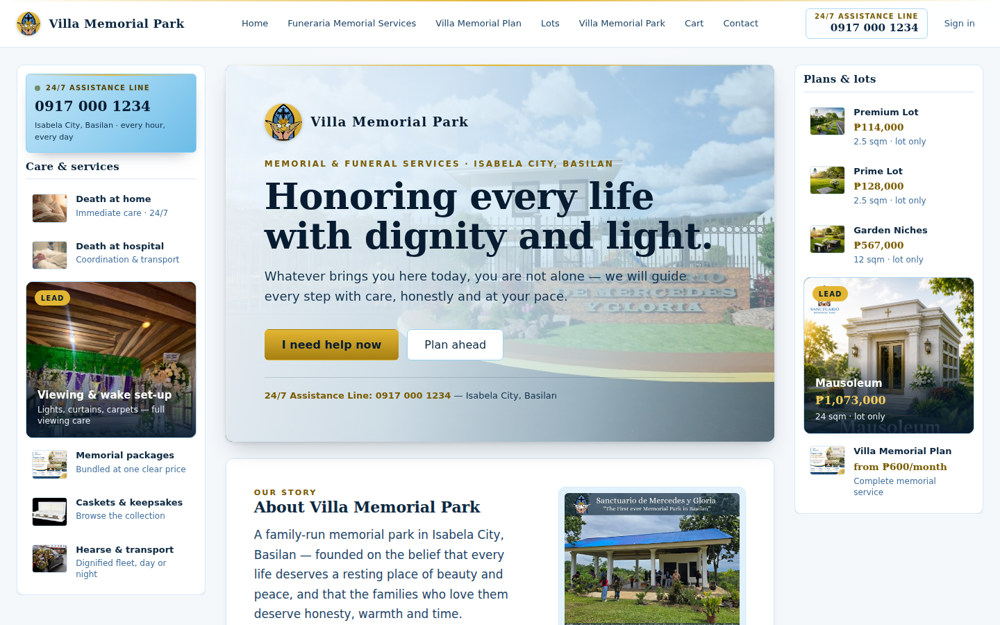
Brand · 7 labels (three of them full client names) · a small bordered phone chip · Sign in.
Every target in this row is 36 px tall — below the 44 px tap-target floor.
Proposed — Option A2 rows · 122 px
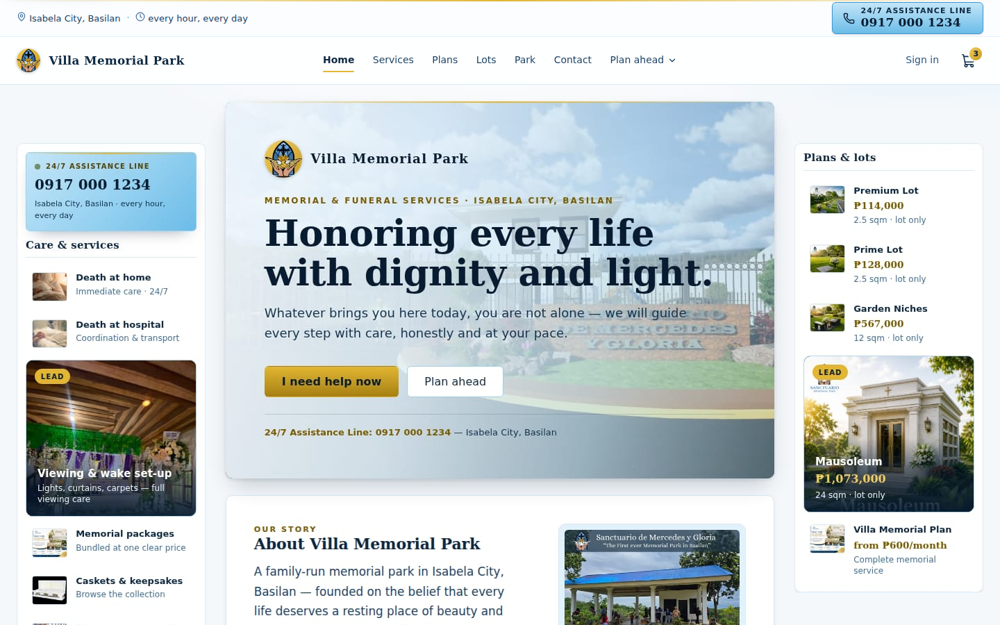
Utility: Isabela City, Basilan · every hour, every day + a 45 px sky-blue call button.
Main: short labels + grouped Plan ahead · quiet Sign in · cart icon with count. All targets
now 44 px.
Phone · 390 px
Today1 row · 69 px
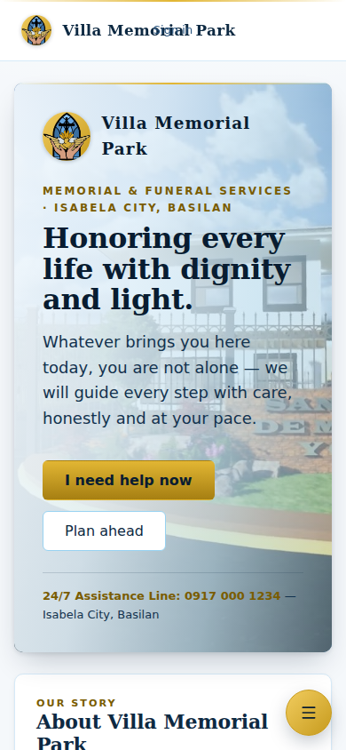
Measured on the live bar: Sign in overlaps the brand wordmark by 68 px at 390
(and at 320) — the sign-in falls into the middle grid track because the label row is hidden.
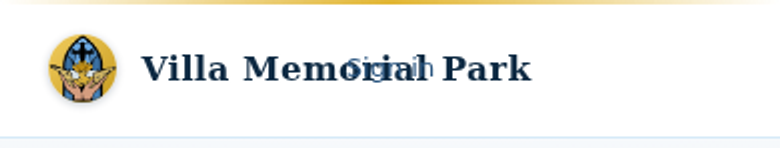
Proposed — Option A2 rows + bottom bar
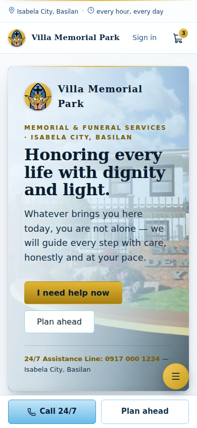
Utility row keeps the trust facts; brand left, Sign in + cart right; permanent bottom bar with
Call 24/7 and Plan ahead, full menu above it. No overlap, no horizontal scroll
(measured at 390 and 320).
03 Labels: Option A or Option B
Both options keep the two layers, the call button, the cart icon and the bottom bar. The only
difference is what the page links say. D1 at the bottom is your call.
Option A — short + grouped menuRecommended
Home · Services · Plans · Lots · Park · Contact, plus Plan ahead — a grouped menu that
carries the full client names: Villa Memorial Plan · Senior benefits · Funeraria Memorial
Services · Villa Memorial Park.
Option B — full names verbatimYour call
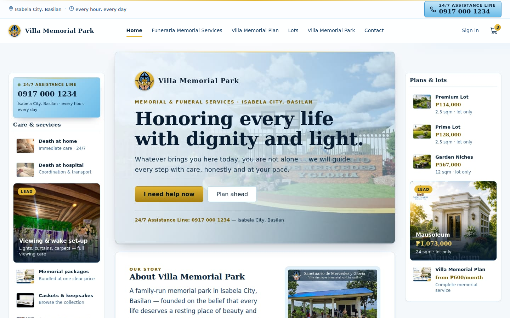
The client's own names in the bar — Funeraria Memorial Services · Villa Memorial Plan ·
Villa Memorial Park — still in the two-row layout, still fitting comfortably at 1440.
04 The states, one by one
Every state a customer can meet, rendered at real size.
Scrolled — desktop 1440 122 → 110 px
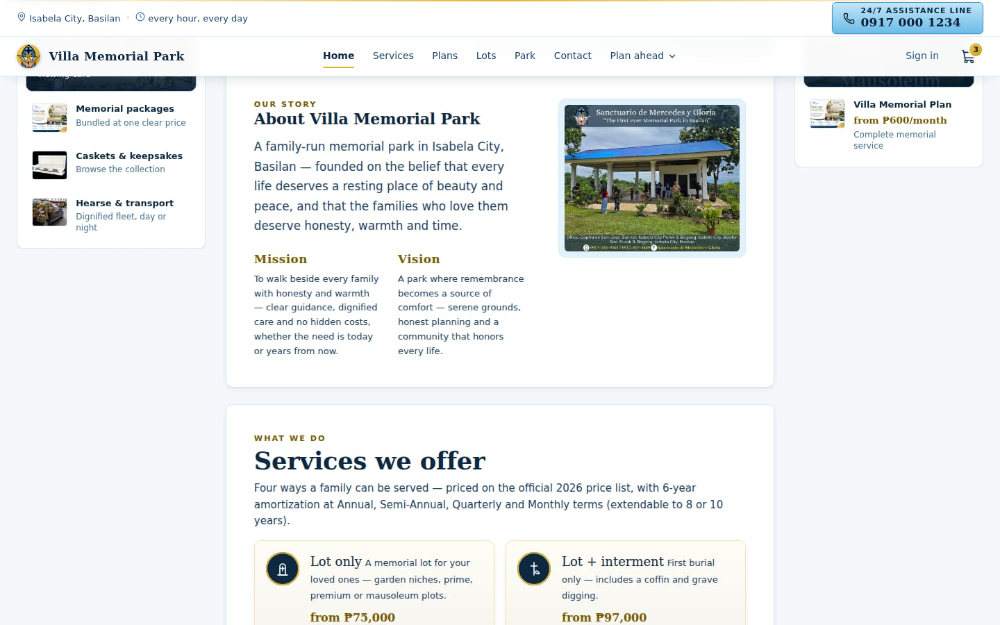
The main row shortens 68 → 56 px, the background turns more opaque and a soft shadow appears — never hidden, so the call button is always there.
Scrolled — phone 390 106 → 98 px
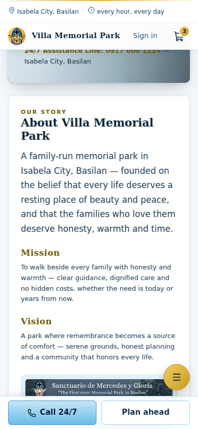
The utility row stays, the main row shortens by 8 px, and the bottom bar never moves.
Active page — Services gold underline + weight
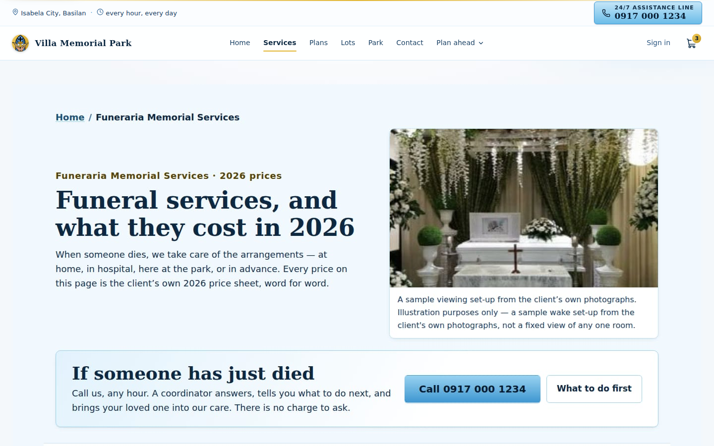
The current page gets a gold underline and a weight change — never colour alone — and keeps aria-current="page".
Plan ahead — grouped menu full names
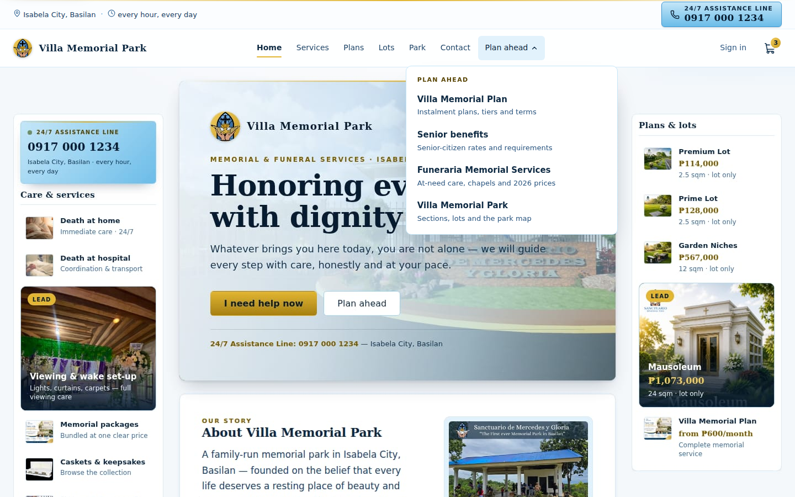
The full client names, each with one plain sentence. Button carries aria-expanded; Escape and outside-click close it.
Utility row — neutral (default) vs sky blue D4
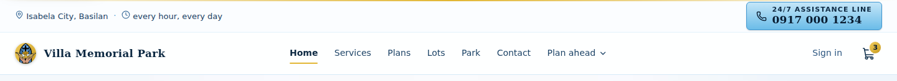
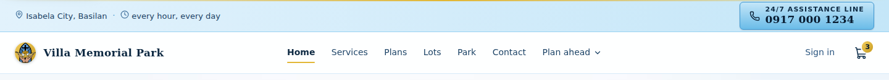
Top: neutral. Bottom: sky-blue wash. Both keep the same AAA text contrast; D4 picks one.
Phone bottom bar in context always reachable
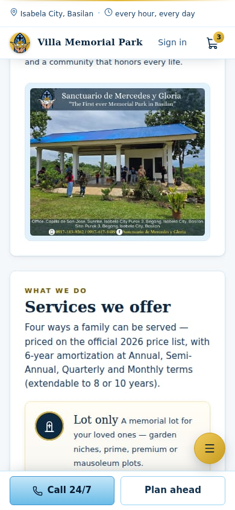
Two 48 px targets plus the existing full menu — no auto-hiding, no target moving under a finger.
Phone — existing full menu unchanged
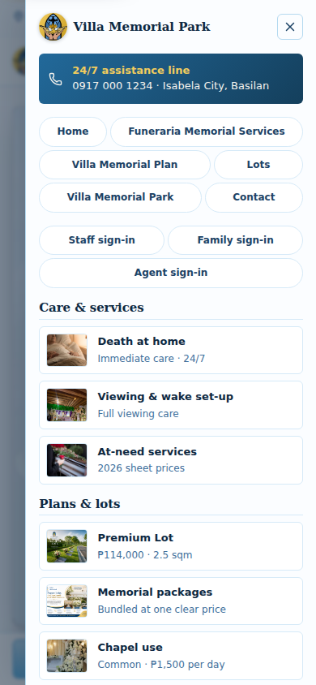
The full menu stays exactly as it is today — the rails, the portal doors, the 24/7 line. The bottom bar lives beside it, not instead of it.
Phone — Plan ahead sheet new
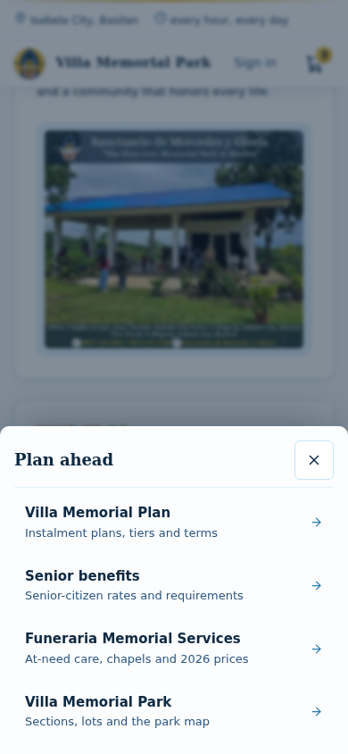
The bottom bar's Plan ahead target opens the same full names in a dialog-style sheet (role=dialog, aria-modal, Escape closes).
05 Try it live
The stage below is the proposed bar itself, rendered from the same code as the screenshots — press
the buttons to switch states, then annotate any element you want changed. Under it, two live frames
let you scroll and click the real pages.
Scroll this box sideways if your window is narrower than 1440 px. These elements are part of this page, so you can annotate them directly.
The two live demo frames ran against real page captures inside the review session. This
committed reference keeps the interactive stage above plus the captured states in §04; the
live production build is the interactive reference now. The demo scaffolding
(demo.html/demo.js) stayed in the
scout worktree and is not committed here.
06 What was checked
Measured with Chrome DevTools at 1440 × 900, 390 × 844 and 320 × 800, against the live app and the
proposal. Raw numbers: .lavish/villa-nav/shots/measure-*.json.
Contrast (WCAG, measured from the tokens)
Element
Ink / surface
Ratio
Level
Utility text — location, hours
navy-700 on near-white
10.08:1
AAA
Call number
navy-950 on sky gradient
13.12 → 8.18:1
AAA
Call label "24/7 assistance line"
navy-900 on sky gradient
11.34 → 7.07:1
AAA
Page links
navy-700 on white
10.27:1
AAA
Sign in
navy-600 on white
7.65:1
AAA
Cart count
navy-950 on gold
11.09 → 6.66:1
AA+
Gradient ranges are the two gradient stops; the worst stop is the one reported.
Targets & widths
Today
Proposed
Nav links
36.1 px
44 px
Sign in
36.1 px
44 px
Phone chip / call button
43.1 px
45.4 px (desktop) · 48 px (bottom bar)
Cart
text link
44 × 44 icon + count
Bottom bar targets
—
≥48 px
Horizontal scroll at 390 / 320
none
none
Sign in vs brand overlap at 390
68 px overlap
none
Accessibility as a feature
Skip link — first focusable element, jumps to #main; appears on focus (shown below).
Focus rings — the product's 2 px brass ring at 2 px offset, and a navy ring on the sky call buttons so it stays visible.
Grouped menu — a disclosure button (aria-expanded, aria-haspopup) with role="menu"; Escape and outside click close it.
Sheet and full menu — role="dialog", aria-modal="true", scroll lock, Escape closes, focus returns to the opener.
Reduced motion — the app-wide prefers-reduced-motion rule disables the height/opacity transitions.
Never auto-hiding — the header and bottom bar have no hide-on-scroll behaviour, so a target never moves under a thumb.
Skip link + focus ring (forced-state capture)
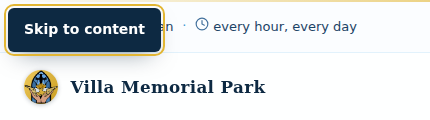
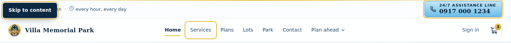
Captured with the states forced: headless Chrome does not activate :focus
styles without window focus, so the appearance is shown by rule rather than by pointer.
Design-system files used (copied into this review, unmodified)
tokens.css · base.css ·
components.css · utilities.css — byte-identical
copies of styles/* from the app. New files, scratch only:
nav.css (the proposed bar, tokens-only, prefix vn-),
nav-core.js (markup + behaviour), demo.html /
demo.js (the live demo), review.css /
artifact.js (this review surface only — not design).
No production file was touched.
Real data only: the phone 0917 000 1234 (tel:+639170001234),
Isabela City, Basilan, the wordmark Villa Memorial Park and the logo all come from
lib/fixtures/landing/content.json.
07 Decisions — five, all in place
Pick one option per question and press Queue this answer. Each answer comes straight back to
the agent with your selection; you can keep annotating anything else at the same time.
Anything else? Annotate any element above — a label, a size, a colour, a state — and it comes
back with your pin. The agent revises this same session and re-serves it in place. No production
file changes until you say the design is right.
08 Review record
Round
When
What happened
Construction
2026-09-17
Plan written; bar, bottom bar, menus and sheet built in the app's tokens; captures at 1440 / 390 / 320; no horizontal overflow; contrast and target sizes measured; five decisions prepared.
Round 1
2026-09-17
Session served; the captain approved the design as presented and asked for it to be implemented.
Decision
2026-09-17
Approved verbatim: “ok im good please implement that” — every recommended option (D1–D5 = A). No element annotations were queued. The worker closed the session; the report carries the full record and the implementation handoff.